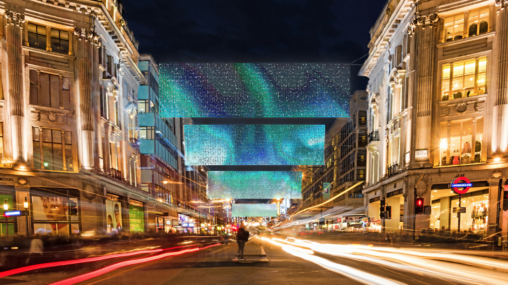
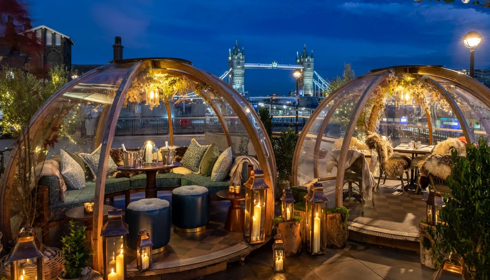

|  |
Check out the Oxford Street Christmas LightsYou know Christmas is coming when Oxford Street is transformed by sparkly, glowing lights. This year, for the first time in six years, the lights are having a complete overhaul. Get ready to feast your peepers on 27 LED ‘light curtains’ which will be draped down the length of the street and made up of a total of 222,000 lights. |
Glide in style at the Natural History Museum Ice RinkThe NHM rink is the old faithful of London's ice rinks: spacious, pretty, and infinitely Christmassy. It has those little plastic support penguins for kids and plenty of space where not-so-confident adults can cling to the side. Even if you hate to skate, you can grab a hot chocolate, check out the museum from the café’s viewing platform and get a dose of that warm ‘I can’t believe I live in London’ feeling. |
|
|  |
Snuggle up in Coppa Club's winter igloosThe place where the igloo frenzy began is infamous among Insta-mad Londoners and tourists alike. Popping up eight PVC party domes along the Thames each year, these babies are filled with fluffy blankets and sheepskin rugs. Cozy, cute, iconic. |
Enjoy a performance: Some Voices Top Of Your Pops 90s Christmas Countdown‘Some Voices’ is underselling it, tbh – this choir actually has around 500 voices, and they’ll be belting out 90s bangers from Britpop bops to club classics at these big festive gigs. For added nostalgi-kitsch appeal, the one and only Pat Sharp and Andi Peters will be hosting. Frankly, if this doesn't cure your Scrooge-like yuletide blues, then nothing will. |